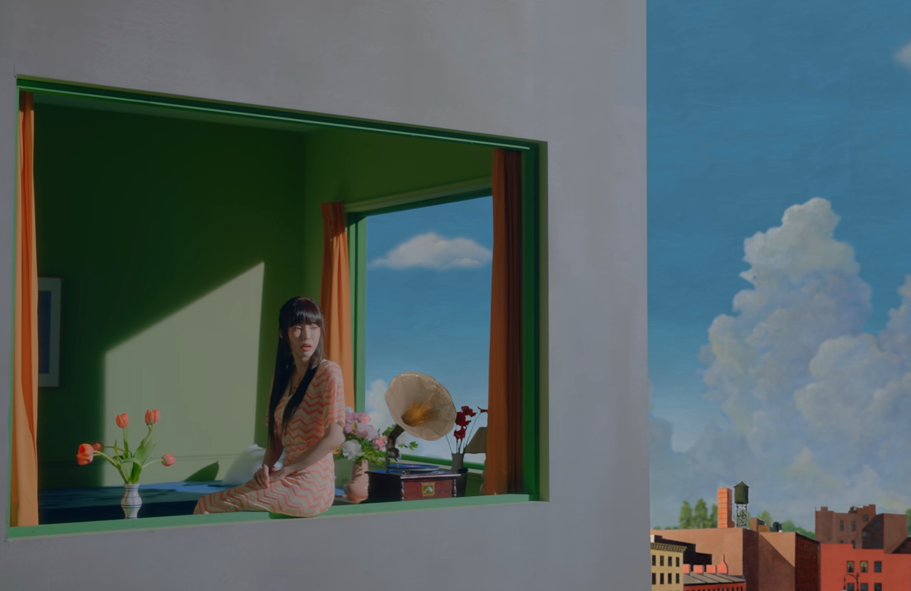
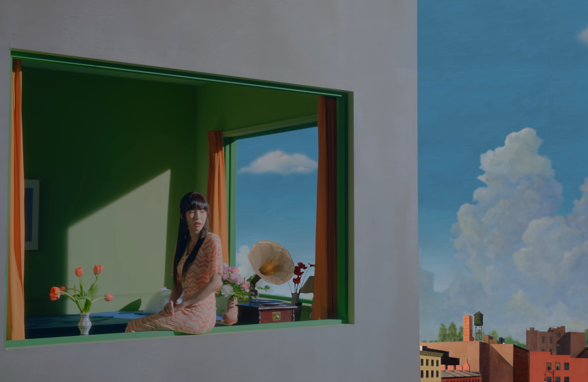

Edward Hopper
고독을 그리는 화가작가소개
에드워드 호퍼(Edward Hopper)
1882 ~ 1967
미국 뉴욕 출신으로 평생을 뉴욕에서 살았다.
사실주의 작가로 도시의 소외감과 고독감을 표현했으며 특히 1차 세계대전, 대공황을 겪은 미국의 우울함을 표현하였다.
뉴욕 상업 미술 아카데미와 뉴욕 미술학교에서 공부했고 광고회사 취직 후 전업 화가로 전향
조세핀 니비슨과 결혼했고 호퍼의 작품에 자주 등장하여 작품에 많은 영감을 주었다.
추상 표현 주의의 유행으로 인기가 없었지만 팝아트와 슈퍼리얼리즘에 영향을 주었고 후대에 평가가 높아졌다.
대표작
밤을 지새우는 사람들 (Nighthawks)
1942년 작품 - 시카고 미술관
밝은 식당과 어두운 거리는 대조를 이루고 있지만 전체적인 분위기에서 고독과 외로움이 나타나고 있습니다.
호퍼는 뉴욕 그리니치 거리에 있는 레스토랑에서 영감을 얻었지만 특정 장소가 아닌 초월적인 장소라고 말했습니다.
이 그림이 나타내는 고립과 공허함에 대해서는
"외로움이나 공허함을 의도적으로 표현하지 않았다. 아마도 나는 무의식적으로 외로움을 그렸던 것 같다"
라고 말했습니다.

철길 옆의 집 (House by the Railroad)
1925년 작품 - 뉴욕 현대 미술관
뉴잉글랜드와 파리에서 본 거리를 참고하여 창작한 집으로 빅토리아 양식의 집입니다.
블라인드가 내려져 있는 창문과 아무것도 없는 공간에서 홀로 서있는 집은 보는 이로 하여금 쓸쓸한 느낌을 줍니다.
아래쪽에는 미국 산업 시대의 상징인 철길 배치하여 미국 배경을 나타냅니다.
평온함과 동시에 느껴지는 단절과 외로움은 미국 사회의 고독과 단절을 표현하고자 했던 알프레도 히치콕 감독의 영화 '사이코'
의 배경에 영감을 주었습니다.
자동 판매기 식당 (automat)
1927년 작품 - 아이오와 디모인 아트센터
어두운 밤, 식당에는 한 여자가 앉아있습니다. 혼자 앉아있는 이 여자는 표정이 없이 컵을 바라보고 있습니다.
그리고 밝은 식당에 비해 창밖은 어두컴컴하고 아무것도 보이지 않습니다. 오직 식당을 비추는 조명만 반사되어 보여 식당의 폐쇄성을 강조합니다.
이러한 빛의 대비와 혼자 앉아있는 여자의 표정은 호퍼 그림의 특징인 단절과 쓸쓸함을 잘 나타냅니다.
이 작품에 나오는 여성은 호퍼의 부인인 조세핀 니비슨을 모델로 사용했으며 호퍼의 다양한 작품에서 모델로 출연했습니다.
기타 작품


매체에서의 호퍼
 

헤이즈 헤픈우연 MV
2021년 5월 발매한 앨범
'Happen'의 타이틀 곡이니 '헤픈 우연'의 뮤직 비디오에서 에드워드 호퍼의 그림을 오마주한 장면들로 연출했다.
영화 셜리에 관한 모든 것
2013년 개봉한 영화
에드워드 호퍼의 13개 작품을 소재로 '셜리'라는 인물의 이야기를 담은 영화.
미술과 영화의 경계를 허문 신선한 방식의 연출로 주목을 끌었다.


SSG 광고
2016년 5편으로 이루어진 온라인 쇼핑 플랫폼 SSG의 광고
에드워드 호퍼의 그림을 오마주했으며 색감과 빛의 사용 그리고 광고의 분위기도 호퍼의 그림의 느낌을 담아냈다.

도서 빛 혹은 그림자
2017년 출판된 소설
'스티븐 킹', '조이스 캐럴 오츠' 등 17명의 작가들이
각각 한 점의 호퍼의 그림을 선택하고 그 그림에서 얻은 영감을 소설로 풀어내었다.
그렇게 만들어진 17편의 단편 소설을 엮어 만든 소설이다.